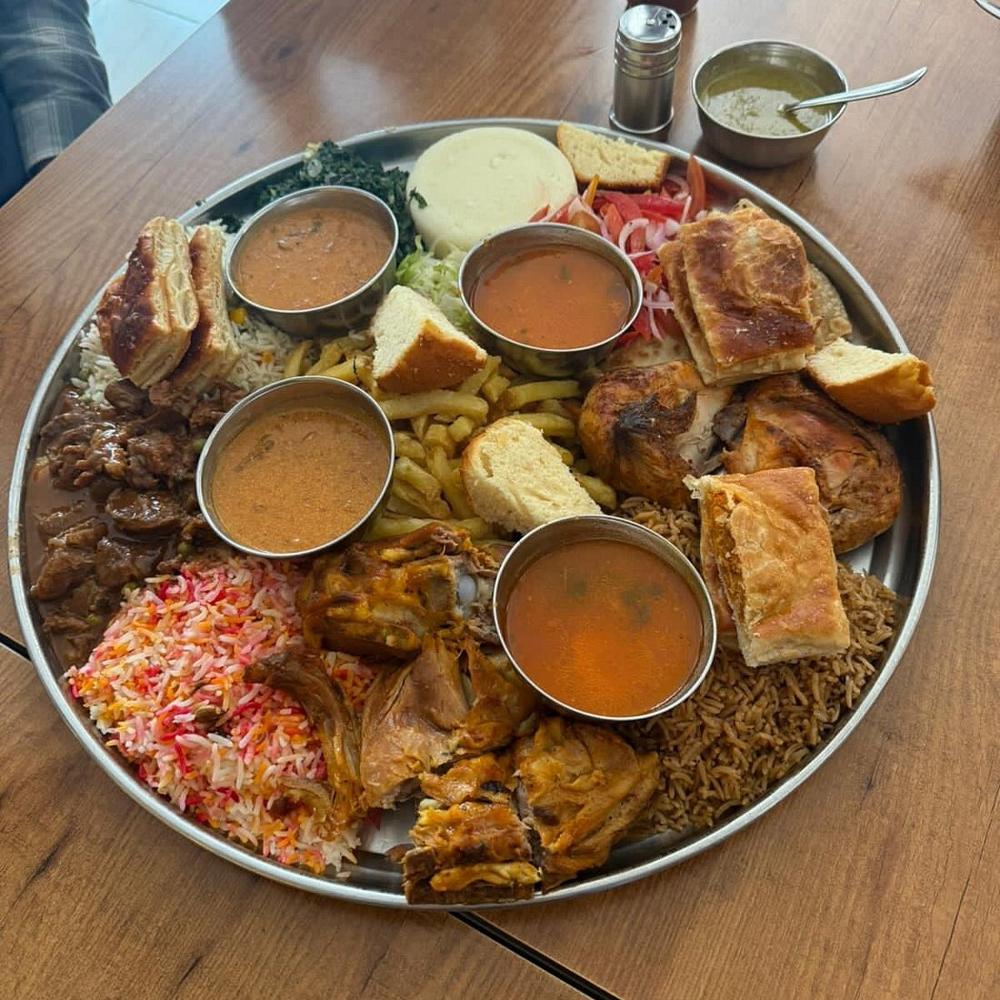
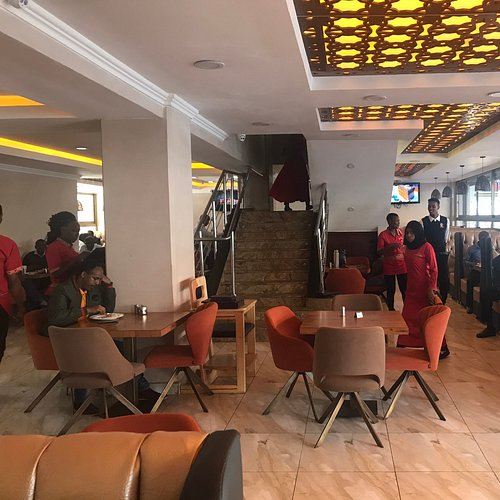
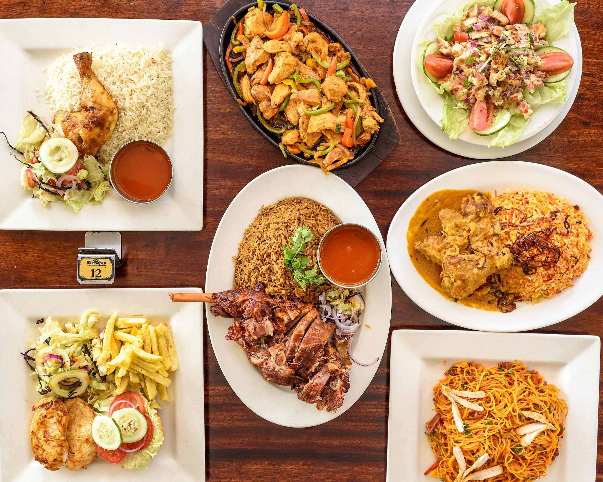
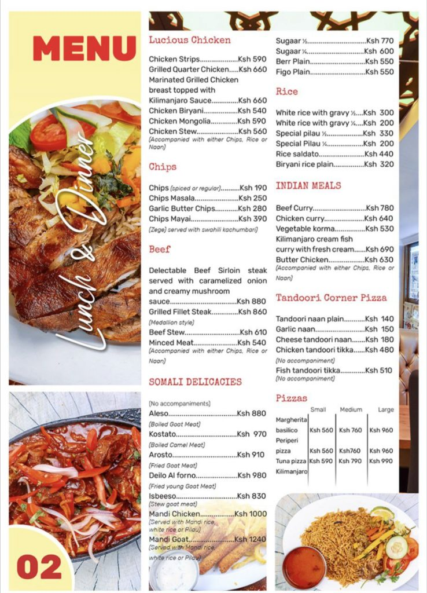

Built for sharing
Signature Platters
Generous combinations for families, friends and groups.

Authentic flavours · Nairobi
East African, Indian and Somali favourites served with warm hospitality in the heart of Nairobi.
A Nairobi favourite
Kilimanjaro Jamia has become a familiar destination for families, colleagues and visitors looking for hearty meals and a welcoming dining experience.
This concept brings that reputation online through bold food photography, warm colours and a clear journey from discovery to menu browsing and visits.

Signature collection
Official dish names, descriptions and pricing can be added before launch.
Generous combinations for families, friends and groups.


The experience
Kilimanjaro Jamia should feel dependable online: clear information, strong food photography and direct access to location, calls and menu details.
Inside Kilimanjaro
Plan your visit
Confirm the exact branch address before launch.
Official menu details can be connected here.
Add confirmed phone and WhatsApp details before launch.